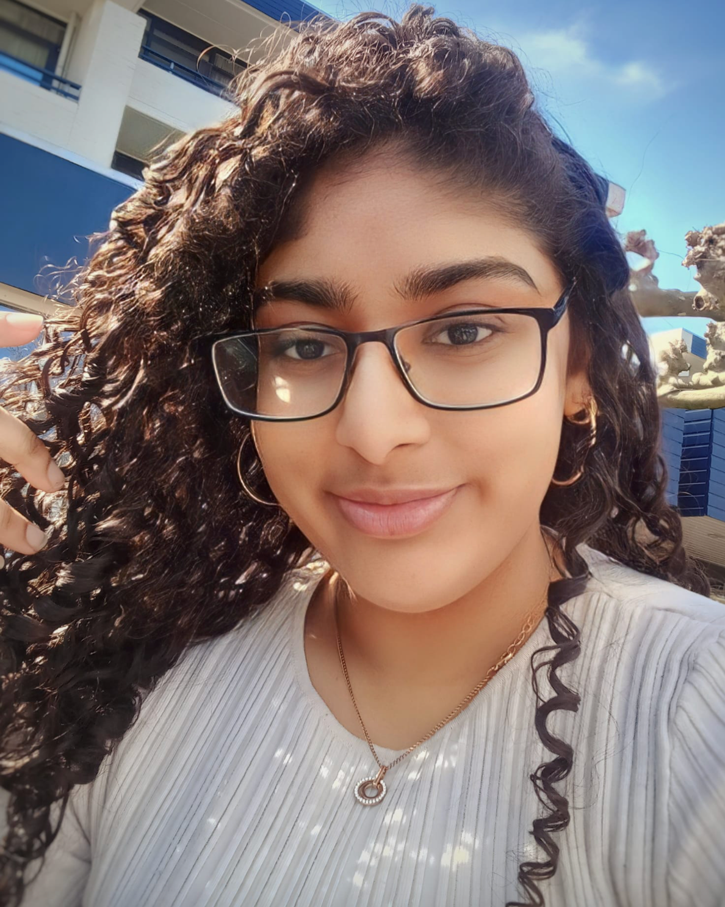
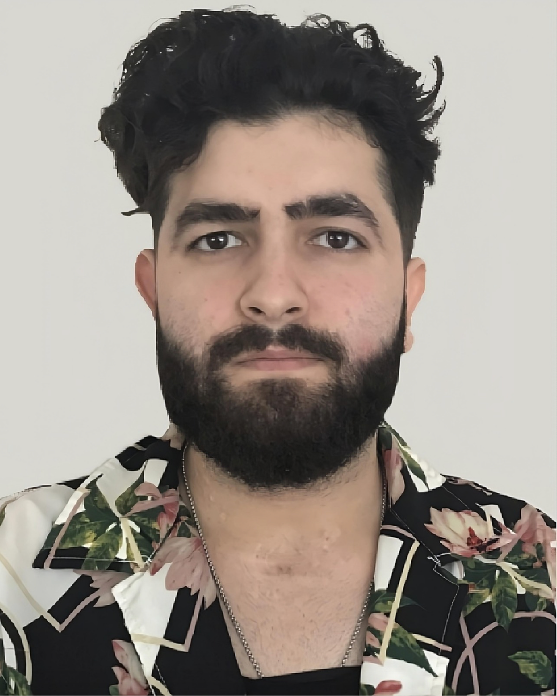
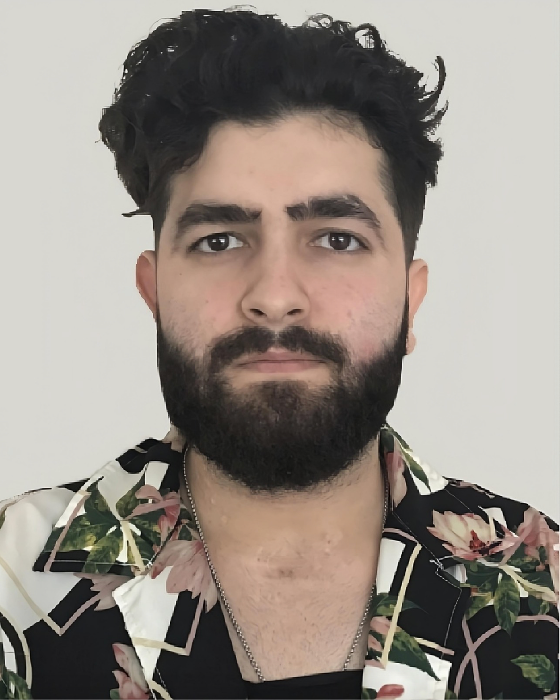
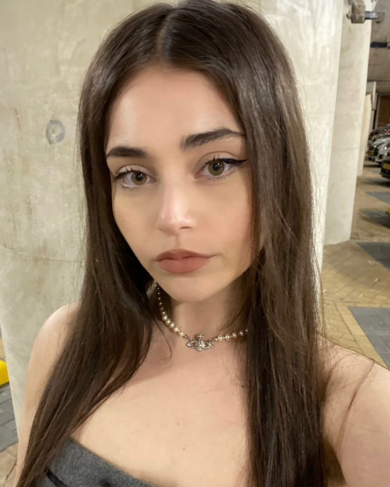

Alisha
Indian Chat GPT
Is de creatieveling van het 2 plus 1 = Roddelen-team. Als student aan de HvA is ze altijd bezig met het vinden van nieuwe manieren om haar passie voor tekenen en vormgeving tot leven te brengen. Hoewel ze haar dagen het liefst doorbrengt met het creëren van kunst, droomt ze vaak van een relaxed leven met genoeg geld. Ondanks haar slaapgebrek blijft ze scherp tijdens de afleveringen, met haar motto: 'Alles komt goed, zolang je maar tijd hebt om te dromen en te slapen...."
 

Ali
Gekweld door zijn Brein
Is de derde host van 2 plus 1 = Roddelen en brengt niet alleen een scherp oog voor design, maar ook een flinke dosis humor naar de show. Zijn kracht ligt in zijn komische timing. Met zijn grappige persoonlijkheid weet hij de show altijd levendig te houden en biedt hij de mannelijke luisteraars een stem in de dynamiek met twee vrouwelijke hosts. Ali is bovendien een
kattenliefhebber en droomt ervan om een blijvende indruk achter te laten op de wereld.

Melisa
De Thee Schenker
Is een van de hosts van 2 plus 1 = Roddelen en de drijvende kracht achter het cureren van de verhalen. Ze wordt gedreven door haar passie voor verhalen en haar nieuwsgierigheid naar wat er speelt in de wereld. Altijd op de hoogte van de laatste roddels en
interessante onderwerpen, zorgt ze ervoor dat er wekelijks wordt gelachen tijdens de podcast.